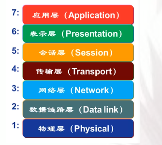
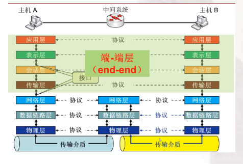
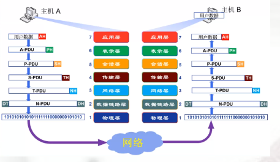
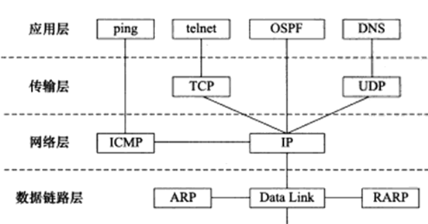

OSI参考模型
OSI参考模型图：


OSI参考模型数据封装与通信过程：
在各个层加上头，只有数据链路层会加尾，进行数据封装。

为什么要加数据封装？
- 增加控制信息：构造协议数据单元（PDU）
- 控制信息包括：地址（标志发送端 / 接收端）；差错检测编码（用于差错检测或纠正）；协议控制（实现协议功能的附加信息如：优先级，服务质量和安全控制）
OSI模型各层实现的功能
物理层
提供一个可靠的通信线路，关注的是一条线路上传输原始比特
- 定义和规范一些接口特性（机械特性，电气特性，功能特性，规程特性）
- 比特编码（什么表示比特1，比特0）
- 数据率
- 比特同步
- 传输模式（按什么样的方式传输：主要有单工（只能A—>B），半双工（可以双向通信，但是只能一个方向进行），全双工（双向通信））
数据链路层
将一个原始的传输设施转变为没有漏检传输错误的线路
- 负责结点—结点数据传输，将从网络层发送来的数据加上头加上尾拆分为数据帧，组帧的目的在收到 比特流的时候能够识别这个数据帧，并且能够提取出其中的数据。
- 物理寻址（并不是在物理层寻址）：在帧头中增加发送发送端或接收端的物理信息。
- 流量控制，避免淹没接收端
- 差错控制，检测并重传损坏或丢失帧，避免重复帧。
- 访问控制，在任一给定时刻决定哪个设备拥有链路控制使用权。
网络层
控制子网的运行
- 负责源主机到目的主机数据分组的交付，由于可能跨越多个网络，物理地址可能不能准确找到，就有这个逻辑寻址，如IP地址。
- 路由功能：路由器互联网络，路径选择
- 分组转发
传输层
接收来自上一层的数据，负责源—目的（端到端）完整的报文传输。
- 分段和重组。
- SAP寻址。（保证将完整报文提交给正确进程如端口号）
- 连接控制（逻辑连接）， 流量控制 ， 差错控制
会话层
对话控制（建立，维护），对话同步（在数据流中插入同步点）
表示层
处理两个系统间交换信息的语法和语义问题：数据表示转化，加密和解密，压缩和解压缩。
应用层
支持用户通过用户代理（如流量器）或网络接口使用网络。典型的应用层服务：文件传输（FTP），电子邮件（SMTP），Web（HTTP）
每层涉及到的协议
